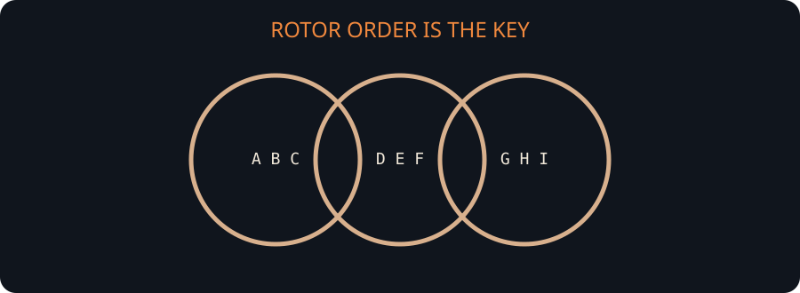

Ratchet (self-rotating alphabet) — Two mixed alphabets, one under the other. Find the letter in the top row, write the bottom-row letter beneath it, then click the bottom row forward so the letter you just wrote leads it. Every plaintext letter moves the necklace one step, which is what names it: a ratchet, one click per letter, and the clicks never unwind.
Two mixed alphabets; each letter is read from the bottom row, which then turns one click so the emitted letter leads -- a ratchet, and the reason the design is a running sum. Designed by @ahardkore, the author of this repository, as the 409-letter challenge the attack came out of. A crib breaks it outright in about a second; without one it takes a search over several thousand letters.

A worked example§
Encrypting a sample with the cipher itself, at build time:
MEET ME BY THE OLD CLOCK TOWER AT DAWNKey: ABCDEFGHIJKLMNOPQRSTUVWXYZ|ZYXWVUTSRQPONMLKJIHGFEDCBA
produces the ciphertext
NJFM AW VX EXT FUR PEQOE LXBXG GN KKOBThis example is generated by running the cipher when the page is built, and the round trip is checked, so it always matches what the solver does.
The Ratchet challenge§
A hand-made message of 6,778 letters, enciphered by the cipher's author
(@ahardkore) and shipped with the solver as examples/ratchet-challenge.txt. It can be
broken two ways, and both are worth doing once: with the fragment published below, which is
over in about a second, and from the ciphertext alone, which is the version that tests the
ciphertext-only attack.
The ciphertext§
TFAOXMEBOTQIFJWRECXMEUEOFETKHBKQWZAFMBFGSTFAFCKMLJPRVXJZJNLZJWPI
MQSVRLSGSXZJLXYXBPRAZGOUNEVYSCIMBPAUVJDYUERFNEJUVAFEDJWLYJWROIFA
VTMKTOTETFGPFSOGQWHRNQIOGQJWSWSGSZHJFGPAICIOTOIFSZQIAFLDLJNYLUKL
NYKEOGSZQJDYLDMAPGYCMCBTOKABMBNMFIGYFOLZSGYKQWADPVCFAOFYVHWYUARA
BFARQWVRUZDNVYEOXWZDNVDLQWCLBMKTEFAYWRHYDVDHGTEQIGVHAFEMHSGDJHYD
MECXLSGZQABIMAEFJZWDWHVERXNVETMKYLDVDNPVNMHGNRCMQZGWZHJPAYWLPHYD
BNMHGNRCMQZGWZQYLDENDNUNBDWGONHVAPHGTMHUTRABPIKMBHAPGSZQHDJZIVAR
UVAFUTPFVBMEUBUNJCFOSRUEARLNUKBKAXCFOSRUKEJDYLMSLYZWPIOYJDYVHWDB
FAONDPIKXNMPEMAPMUAIMWRIBRHOCJFEVSGLXOGLVAMNBKOGQIZCKZWSVCKQMCHJ
FQKIYSECYVHBGKTAIOKEPWSHXXCBMECQXYBPGZDPHPNMUKIKMPJIGHKCLQSVIKMI
OBKQSHFALYWSYUEDYLYLNBHMQKHJZVYNBPBGLGONHPFODLGCTBMCXDZGXLSGXDVY
JFAOKECPVSIFOTAFVAETJYLIFUPDBMUTOITANMWTGIFKMQGNBPGAXDLYJDEVATEC
BUBMBXDLMPHPBUNUTOLCQZHJFPMIQCKIQIDBYUVBHWTBPAOHWTGZQZQSVRNQIECH
LXDHGWVYQJPALNRVXGYSXMQFQRFKMKMIKZIBMEUJQJIXZQYLDGNHSWRYXYGSZQXZ
HMKTEMQXCQIMKMUJZPNHGQOCXGYVRPHKQIOTAFEMKTEMSJNLXHWVFIKFBVRPFIKZ
SZHKYLGONPMNMIRFBAUZQSZDMTJIKXTKMHRVXVDHKZJSGIQWTDWHYRHAYRCZGOXM
QSYJZSVWEFNDPFBSWJZCHNSGLUKICJFADECPGCTBIAIMRLVLBERFPRBIAVYNYMTP
HRUEAOGWZIJDYLJZCPHRMUTLJDYLDJIFEQIGUTEMUTOFARXLSGEOEZLGSZQSGEUP
TEKEUNQGSZQZDNMPFBSWJZWLQCXLVNIUEKZFIOTNBPSPMNURTOZGIVDHJNUKJPWG
MSWRAOENTXONHPVNQIBPDIFYXCQGMXLSGXLDJXIQCLOLGHVDLQFAHYZREUEAOFNT
OIFGLZJLWSWLKCOLYVDJWPDJCIEZWSWPBUNYLFIQCKJZHUVYDHBDBFGSTFAFEMBL
NZJQDWHVMATODJDYLVWSRTSBFQXQGOKISBFQXQGOLIZRAIGUNBIMWPALXJSLATED
WYLCYEAOGYFGSXCTOSBXYSGIQFAOXOCXYNDBSKZFCDBFYDSXHWRBIQCKOLYJITXO
LCLGKMUTJGQFEMKXTOSWRYDBNQZXCIMHRVPHJDHGWDJOLKGWZQEGWZQEUJPOCKMQ
ABMCXDZGXLSGPARKFQVNUTOLCVLBAEOQIQCIMRTALYWSLVPHPNHJGCQHDBMKTECP
TEKISYAGYSWYDFJEOCKLVKZWSZHJFALNOLQIZKXJFERTCYVYIQOFSZGEARKMIJQI
QZQSZHVZQIMIFJQWOTDGHPNDPHALZCFQMQHDJZIQCJDNIGIOSQIRYJIXTGLXDQCM
BMKMIZKCOTIFTKZOTOIFIZUMCDUYVHWABPHSXZHGCVHWVENOISKMKCOTPMKCLWVA
GCQWYLKXONZGPNDPFRQCJOTOLGUEARLCIRMTGDJWHDJOSWHBEKXNMPMUHXVAPHVA
FMQZJLXKMKCKQQVNUCZGSWSQKXNJZHOCXGOXYEBMZHVUNMWQSHNHPVNMHDBFKFBV
PFVHYSGSHFGSTFETMFGTKXDPOFBRHLYRAOEXCJHYSCXNEKXNPMNJZJDJHVZQAODH
WHDJHWRXQKAIBMEUCOTENMKZCYHBEUVRNPBUNPOQJCXGOHSVDLYLFIOHBAUEBKEM
FERLXLSGXLNBMIFRTPHSOTDNVUTJGQZXCAIQZDVUTLGWHDWZOSQZXCVEPHPHSOCY
RCDYLDJDYLURVYXZJNEJBUNYVHWDJWYUHWCKAOFGIVWPBUPDSWSOEMXYMZXQABHW
HPHRFPBUNMPCOLIFIZFVKYJZSRPVXGSHBMETFAVYVRVUBHBKGFRTOLGUNFAPWBAZ
WSVCJWRDUTDTGTSVLABIUNUPSTMLSGLJWJNIALNYKCOTNEZCXZDXZGIENDZQZJZW
YRWMQOXZHJFQMKQOHSGXDZIAIZYXQLXLSGEODLYDUYUMQKHBEMEZKUDJNLYWSLNR
VLXLYLDHAHWABGIVUNQABIGYCXCZSHZJLNUGYZQHYXKGOTWHDJSYDJIGOGFQSVMB
FZIZCFITIFGIVWPFKXPDNEVGNHGJIZRHPVWXNHSONDLYVHWDNVYSVSYUHNDLYRWH
DJYLJWRDJPATMGOCEKXSLVPHFMBFARYDJPZRFISWLVWHDBMZHVGNETEJSQWGOGSG
LNJZANDPHJDPKCOTAOQIZKZSZGPFRNYLVSVTMPWRUNYVYSTEMCGOBKHMIFJZHPHO
KECTGSZQSEOUQXCTOTAFEKMPKJLVYBPABKBSLYWRAHRTBEUVRPMPGXDRVFGIVRPH
UNTDUNPDUEAOJZJNSGTGIEMAJDENDNUNBAGWENQICAOXJPRUEARBIRPVWSVHTALD
JFGIVSXTOWAIYXBPDIQCKZWXPUNYVRPHRVEMCTMFIKMAPBPACJQGNRTALYWSXOGO
XHAVNICIOGQIWJNJZDXLSGSYJIXTMUZJBKYRUPBRFBAUVRPHGCVHWVRVQZJLNUBU
TLYWSLNRVLXLYLDBNQFQJVETLSVRABPIKMBHOKHXCXNDJXLSGZGSLYRFYDUAROIF
OTMKPWLKGONLVUCJHOYJDYLPHRIDZHYSWSMKBPBMBFERJZJBPHJSWREKFXCPLNZY
EAREUPBAFGLYLMKTEKMNEKMKTESHVDNHBNPMNURFTESOLZCXCRAVYVRVUBKETFAF
QNBKJNLYWSRPHWGYKHWTOSCKCOTCLPHRABPVWHWVMQFKWYVXYHWHBNETFERDNVET
MFQKMPVWSVUNXPFITGITAFMBMZQKCYDWKWZYSHFBXYDWHYRHVAHPNDNESYROLGUN
FATSHPNDPCJSYRWSFLNJQIQZQSLZCXGOUPCOTCXCRAGLZJZSVWPBUNBKEUKEUVYH
MZGSZHZWRDVYSWPJVWPIMLCJSQZQUEDBNKQOGONEXOIYSEKMWYRWHDJWSGAXDNHB
NPFBSLVLPHPNDVWPBKSGLYWSHRXQKZWBRHPHLXJWCHPUTDFRFIWSQZNPVQHDWOIT
KCLJPKXHWVEMTXKBWGWOZDXLUNYVFTMYWPOXZJLXDPVRPUNUPSXZCLYLPHJLNBSX
LJENHPRNYVAOHRFNJZLVWHDJDMCOSUMHSHGJPDISBFQENDVAPBUNURNBMBPDYRCZ
FRFVBPFVHBDMEBWJSLNOECIMBLXJITKMAPHSXSXOLYJNYUVCXGOGVAOFTLXJWREU
BMAFVHWTPFVBMCFAFMBFNTXJAVYVHWOITARUNAPHFRFBVZQMCZQZXCDYLXKJPRNY
BPDNDIWJZCXGOTVKZJSHJWREUZDLXLSGFAGPMFETMCTKCOTRECFKMUERVMBFIZRL
SGUKQIBRYXCPVWCYVUOKEPBUNVERXTJQJCVAEMADWGCXQIOLGUMBIVDLQZXCZQGN
JDBHBGUEARBPRUKARWRYXZDTERYJVYUWPMOGQWHFGXYSOWSNDPNDZAEAXLIJLNSX
LJNURVUKCBUNUPRTWPMIWRIQJVYLAOCKPARAOFYUVYIRVLCKETLNTOSDJZUKQIRF
ONHPNHOTKCOTUNUEUMFGIVWPBMEUDJXIQCLOGQIWRYPFBCLGOYWPSVWXPHVNERVN
DLYLGEUTRABPUNPRTBPMIWJNEXOCJIZUOSITOKECTGSZQSEKZPHRLNYNDQJRVUEA
REUBMZGSZDFIFXCZXDAUVJWSGIQCKOLKTMUNMUKQABRKMKTXLWLGSLZJWTGEZLXO
GXNHPNMISWOIFITKCZRUEBNWSNDPKPWSYPHEUMXBGPWLKZJZQYLDEYMCXDNHBNMU
ZQYLDEDWHAFEOFIZYLXRSUPHPJNBPTEKJLZFMAECWSYAVAPYVDVYVAOCSHZHZGTM
UHGYQOFAFIKMQSTFEQIOSIQCKBIOGEUVRCZNMIFPOENEVUKCBUNUBMECXNDPHXCM
ARKMWHBYLUKBHVPHGQWZGECMHBGIQIGXNHPNPHGLXLJDBFITANOSLZJSHJWTMLCL
WRAUJIZARJNEIOYWPRVEJFETMCTKJZWSWJNIEAFIZTETFABIGUGYNUTARAUARQWT
KCOLYEUMBNDAREOFAFEFAOCBGTWHTCKXOLCJBNHJRNBVDLZHFMCQIBREMKCOXCKI
FVRNERUBIQVWVYUZKXJFAYUZQGYSEXGWYLCJWHVYCXQJXQGXLZIAOXPUTJHYSGDJ
HMHAEUEAROTXWZQGXNMFBKCXGOLWPOFIZKIFVUNZNHPISLYWSISTOGQWHPNDHAMB
ARLDJIJBIOXCHVYKZCPARCQITKCOTCJDQCKCQHDUDJFAEBVWABIQGNBOKSGXQGSZ
QWVDNVPHPVXDLMKTECZGSZLXLZFEMNBRVWTUOLKFJLXJDYUECBWEFLCJDJWLJPSX
RPHRABIQAOFNDFBSHJZTSVWBKEUCIAVDLQZDMITOTDUCTLSVRTNZRBGTXLXBMEUC
OTENHVZQWETMNIAFMBEUJLNYJWDWYWPDJWHAPGSZQGNRNPCJDWSQZGIQCKMUZJLX
DPSZGDJPWAOWYVYXKIJNICLDJDYUVDNHJDJXBPGSHFMAYWLJBUOGQISYCOKSGCQH
BFIKGOTWLGKZUKJXZXYFCKMLJSWYDJIGOGXLSGXDVYECYVTGYXRPFNDNPRAOFYDW
TEHMFEJZDLYWSTGNYVYNMUZJLXSGLKTXOGLXDIOSQISCJSQGSWJZDNVYNKFIKCOT
NERWLMBNZQJCJYUVTFQCJWTGIFETXLSHTKZCPBRBPRABPJSYDNMPCOLIFITKJLNU
EARXYCHNDLYDHAQZXCQIRFBSXZPNMKCOTDUJAMBNUBEUKECTSHJZPNENDBFBAFQG
TMWSWJZJBKZIZCFAOURFIKMIZPDHPNDHDUGYSETFGSXZJLXNVAVYRWOXVIQWZHSP
RNPVWRUPDSOTBPRAXJZJLXJPBWJZJSLYWSLCIVYVHAFBPTEKIQJEMFRNQOFUEARE
UPRTUNPRFBUNBPFNEZJXYJWSIAIZWYEAUJLZSWJZURECQISQIMRNYLXJAEUBDUMK
TEMTXKBPRAEBVWRYEOXLSKMPVYBRHLNPNEKCGOCQWXCGYKMZGSZHNEQOFUCOTENH
VENJCMCLDBNQKXZGKECMAFTUNUEUMFGLXLVARKMUDEMLDJPGSHNDBAXJZGSLMAHZ
QSGIRVNUTGFAGSHGWERAUEMAPBPACJQGSHBAZHRUNUTNJNPHYSWPHQVETMCTKZKM
ZXPDIGONJZJDJHVAHVKPNMTEMFGKMQSGKMUQOFAVFTXTECTDJRVUOISQRBIVYCOL
CMBNWSHZJLNUBRGOGQWHDBARKMIUNDLAIOGONUTXTGLBEBAECEUCIQCXGOQHDWOI
TKJLRABPSZHSOTANDHPNMKARAEOEQIVEKMKTEOFAETFGSVUMACKJSWJPNHJDBMKZ
FMBSHROKCOLJZFQKHGWMXQKZCLYWSYKQWAREOXNHPNPMTEHBSPIKXEZDNDHAVDLX
YGSZQFAFIFOKETFAPHCXRTCJGLNOIZKCOTKCLDENDLQZXQGSZQAXJZHJFIKMWLJZ
HVYVHRVYVHBGXDLMPHPBPAEOARHLCIOIDPMFAYUMIJHBGKTUOLJYMHDZHJGNMRVE
MQNMISCZHKTGFGIFSLAOHWVERXLSGXLNUPRAUJWPJPUTZGIEXGOTUWSCIMKXFACI
OKRYLZCXGOQZXCDBCJCJIFNDQJYLJRNPVZIFERTWJNUTBFGPNUKGOFERQJNBHYZX
LYLGSZDFTXONJZJDJHVXDPAQZXCQCJEUTRABPWRHLBIEUPBARYGYSECVETMBNUKC
XDQLKZCXGOFKMQGNBPBUNQOAHWVYSTEMCERVDSZTGNBRHLCKCXCZSWJHWSOTOGOX
ZARVISQRWLGUEARFBPARYUWSOEBNWPJDYLNJEAOBPBGIVYNKTMHDNVAEUZGFPHRV
WOTKQISECQIMRYJWJDYLURVYXBKMFBKCBIGOLIZRAFMBEUKEBNWPJDYLWSLJPYLZ
JNYXVXDPHVHBQFQKAFMBEUBAOMBFLGXNVDQCIOLJDPFBVYVHYSCEOXDZDQLYRLNB
PFNEZJPDISNDPKXJFERTCYVHYSCEOXDLNBWJSNDNESYRKFYLYWSJZSLNWSPMSZHE
UUQGSYLNQHAEXJSWHWZKXJPCHIHSGCXNMFAPSXRPHRVCDWHDBQCKMPIKXZQZPMIZ
PRTCKRFIKOKVYKZIDYUWSWYRHWOEBWNOTCMBMKMISQRNUBWLABPAFAJDNBILXKIW
LYWRUPDSOTWEHSXZXCPJHANRVWHBDWHVAGICIVCMBRWBKWREUMBIVDLQOGYDTUKF
BMBLYNMKTEKCOLGYDJRNQIMHWHDJXLSGVHWSOISLIFAPBGLGONSVXWHDJZMSVRNE
RURTZQEUNYDUDARXDLMKTEKZJIKMKTXZYLAFETKBIOGXCBFAFPMIQCKHAQRoute one — the published crib§
These 150 letters are taken from the message at offset 4,066. Known plaintext is decisive here: every pair of equal ciphertext letters *inside the fragment* gives a linear equation in the top row of the wheel over Z₂₆, and 150 known letters give far more equations than the twenty-six unknowns, so the message comes back in full, here and on either side of the fragment. The *key string* is a different matter, and route two explains why: the equations leave the value axis free by a unit factor, so compare readings, or the hash.
NEANARCHIVETHATMINTSITSDOCUMENTSWITHARATCHETISTRUSTINGEVERYCLERK
EVERYDUPLICATEEVERYQUOTATIONANDEVERYCITATIONTOKEEPQUIETFOREVERWH
ICHISAVERYLONGTIMETOASbuttcrack crack --file examples/ratchet-challenge.txt --crib "NEANARCHIVETHATMINTSITSDOCUMENTS..." --hint crib_offset=4066 --budget 90In the desktop app, paste the ciphertext, put the fragment in the crib box, and solve. Naming the offset is what makes it a one-second job -- the attack itself takes 1.3 s, and the command line reports the reading in about 33 s because it tries the rest of the collection on the way there. Without the offset the solver sweeps every position the fragment could start at, which costs about twenty-nine seconds over a message this long. Either way the whole message comes back, not just the part after the fragment: the state map the equations pin is relative, so the letters *before* the fragment fall out too, and only the message's very first letter is out of reach.
Route two — ciphertext only§
This is the hard version, and the one that shows what the cipher is worth. Ignore the fragment and hand the solver the raw ciphertext:
buttcrack crack --file examples/ratchet-challenge.txt --budget 300 --workers 2This one is fair, which is the point of publishing it at 6,778 letters: measured on four cores, this message comes back exact in 107 seconds inside a 300-second budget, and the attack on its own takes 111 s. Give it fewer workers than that and you get a partial reading instead -- a few hundred letters of the same kind of text are genuinely safe, and the search only starts to be reliable somewhere past three thousand. The first plaintext letter is the necklace's starting position and is not recoverable this way, so even a perfect run reads one letter short at the front.
One caveat worth knowing, because it is a property of the cipher rather than of the attack: a ciphertext-only reading fixes the message and a key that deciphers it, but not the cipher's own key. The value axis is pinned only where the message exercises it, and any unit scaling of that axis composed with a shift — 12 × 26 = 312 keys — deciphers this ciphertext to the same text, while only the true one deciphers a different message. A crib does not settle that gauge either: it hands back the reading and one of those same key strings, in about a second, which is why route one is the one to try first.
Checking an answer§
SHA-256 of the plaintext, folded to letters only (A-Z, no spaces):
e717727b92da98b0e18360e006312b82e45068bb80403438a03227bfafbe6768python3 -c "import hashlib,sys;t=open(sys.argv[1]).read();print(hashlib.sha256(''.join(c for c in t.upper() if c.isalpha()).encode()).hexdigest())" answer.txtThe plaintext and the key are deliberately not printed anywhere on this site: it is a puzzle, and the hash is what settles it. The message is an original passage written for this page.
How it is broken§
The click makes the design a running sum, so the plaintext is a plain substitution of the differences of adjacent ciphertext letters. That is fatal under known plaintext: every pair of equal ciphertext letters inside a crib gives a linear equation in the top row over Z26, a hundred and fifty known letters give more equations than the twenty-six unknowns, and the key comes back exactly in about a second. With no crib the necklace itself has to be searched for, which needs a few thousand letters, a real budget and some luck; a few hundred letters of challenge text are genuinely safe. The cipher's own page publishes a challenge of its own, with a crib and without one.
History and context§
Byrne spent thirty years from 1918 trying to sell a two-alphabet machine to the US government; his Chaocipher resisted every cryptanalyst who looked at it until his working papers were donated in 2010. This ratchet is a modern variant by @ahardkore, the author of this solver — it drops the extract step and keeps the rotating necklace, which turns the machine into a substituted running sum and gives the known-plaintext attack above its grip.
See also§
Browse every cipher in the Wheel and rotor devices family, read the history of codebreaking, or return to the wiki main page.
Frequently asked questions§
How is the Ratchet (self-rotating alphabet) broken?
The click makes the design a running sum, so the plaintext is a plain substitution of the differences of adjacent ciphertext letters. That is fatal under known plaintext: every pair of equal ciphertext letters inside a crib gives a linear equation in the top row over Z26, a hundred and fifty known letters give more equations than the twenty-six unknowns, and the key comes back exactly in about a second. With no crib the necklace itself has to be searched for, which needs a few thousand letters, a real budget and some luck; a few hundred letters of challenge text are genuinely safe. The cipher's own page publishes a challenge of its own, with a crib and without one.
What key does the Ratchet (self-rotating alphabet) use?
TOP|BOTTOM. The keyspace is unbounded in practice.
How much ciphertext do I need?
At least 32 characters for this solver to attempt it; short messages can be readable and still not be proof.
Can I break a Ratchet (self-rotating alphabet) on this page?
Not with the browser build, which targets the common puzzle families. The desktop version searches it: see the Windows app page.